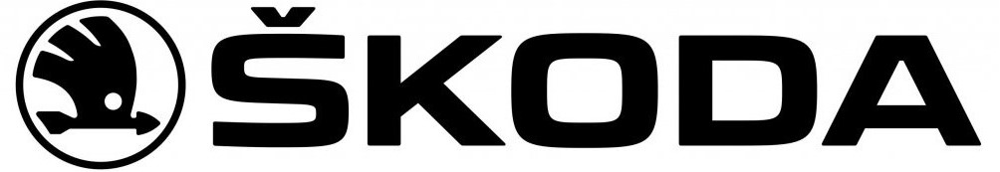
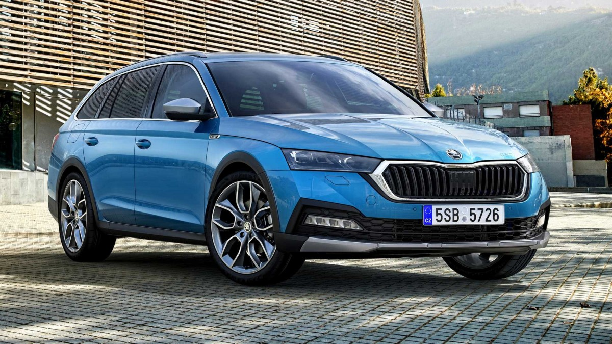
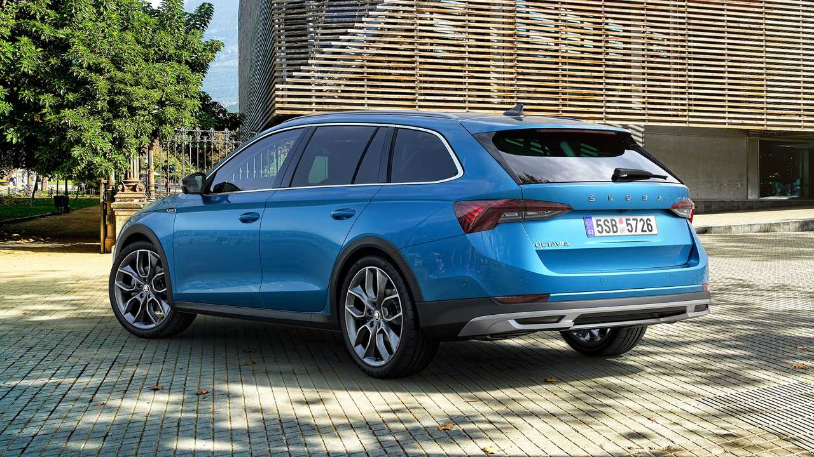

История производства автомобилей, носящих в настоящее время марку Škoda, началась более ста лет назад и этому предшествовала 10-летняя предыстория.
Поводом для основания компании послужил отчасти курьёзный случай. 26-летний книготорговец Вацлав Клементrucs приобрёл велосипед производства немецкой фирмы Seidel &
Naumannrude, который, вопреки ожиданиям владельца, часто ломался. Вацлав написал жалобу в чешский офис производителя, располагавшийся в Усти-над-Лабем, откуда он
получил отписку с требованием писать рекламацию на немецком языке. Хотя в то время немецкий язык считался основным в Австро-Венгрии, ситуация в целом задела Клемента
и он решил, что сможет самостоятельно заняться выпуском велосипедов, только более надёжных. Компаньоном стал механик Вацлав Лаурин, часто посещавший книжный магазин Клемента,
мастерская расположилась в арендованном помещении на окраине Млада-Болеслава. Новообразованное предприятие назвали Laurin & Klement, и с декабря 1895 года начали производить
велосипеды под торговой маркой «Славия» (Slavia), имевшей патриотический славянский подтекст. Продукция быстро завоевала популярность, штат компании постоянно увеличивался,
росли и масштабы производства, уже в 1897 году была приобретена собственная земля и построен завод. К 1899 году фирма Laurin & Klement начала производство мотоциклов, а на
рубеже веков компания предприняла ещё один важный шаг — был взят курс на производство автомобилей. Уже первая модель Voiturette A, выпущенная в 1905 году, имела коммерческий
успех. Вскоре дебютировали другие легковые модели различных классов, от недорогих до престижных, а также грузовые машины и автобусы.
Для ускорения развития и расширения производства возникла необходимость привлечения дополнительных финансов, и в 1907 году основатели преобразовали Laurin & Klement в акционерное общество.
Размеры фабрики неуклонно росли, число сотрудников превысило шесть сотен, продолжала расширяться и линейка моделей. Большое влияние на продажи оказывали спортивные успехи машин Laurin & Klement,
на которых удавалось регулярно показывать хорошие результаты в международных автосоревнованиях. В то же время в 1908 году было свёрнуто производство мотоциклов.
В 1912 году была поглощена автомобильная фабрика RAFrude, располагавшаяся в городе Райхенберг[5]. Одновременно с ростом завода расширялся и ассортимент производимой продукции,
который стал охватывать новые секторы машиностроения для компании. Начали производить стационарные двигатели (по лицензии Bronsrunl), авиационные двигатели (по лицензии Lorraine-Dietrich),
бесклапанныеruen плунжерные двигатели Knightruen, дорожные катки Laurin & Klement VB (в сотрудничестве с First Prague Stock Machinery Ruston), моторные плуги Excelsiorrucs и др.
Во время Первой мировой войны завод был стабильно загружен военными заказами, легковые и грузовые автомобили производились для нужд австро-венгерской армии. И наоборот, после войны возникли
проблемы из-за распада Австро-Венгрии, большинство клиентов неожиданно оказалось за пределами границ, разрушились многие довоенные деловые связи, экспорт был сведен к минимуму. В частности
полностью прекратились поставки машин в Российскую империю, на которую до войны приходилось до трети всего экспорта предприятия. Новые европейские государства оказались экономически слабыми,
в том числе и новообразованная Первая Чехословацкая республика, которая активно боролась за территориальную целостность, а автопроизводители на её территории находились под контролем армии.
В это время в Laurin & Klement ограничения на производство автомобилей старались частично компенсировать другими видами деятельности, такими, как производство моторных плугов Excelsior,
пользовавшихся хорошим спросом.
Спустя несколько лет после окончания Первой мировой войны экономика страны начала восстанавливаться, в Laurin & Klement произошёл новый виток развития деловой активности, обновлялись торговые связи,
несмотря на увеличившееся число таможенных барьеров с соседними странами. Компания постепенно увеличивала общий объём выпуска, хотя сами модели послевоенного периода считались консервативными на фоне
продукции конкурентов.
28 июня 1924 года на предприятии случился пожар, который уничтожил значительную часть оборудования и техники. Хотя оборудование заменили, и в ноябре 1924 года оно было установлено в новых зданиях,
Laurin & Klement оказалась в тяжёлом состоянии: её модели из-за устаревшей концепции с трудом составляли конкуренцию на внутреннем рынке машинам чешских компаний Praga и Tatra, масштаб производства
оставался относительно небольшим, а вследствие этого цены на продукцию — высокими. Финансовые вливания были необходимы как для расширения производства, так и для разработки новых моделей.
Поэтому 27 июня 1925 года произошло объединение с чешским концерном Akciová společnost, dříve Škodovy závody v Plzni (в настоящее время Škoda Holding). Автомобильный завод в Млада-Болеславе
с тех пор стал специализироваться на производстве легковых автомобилей под маркой Škoda, почти вся администрация переехала в штаб-квартиру в Праге, а разработка и производство коммерческих
автомобилей — в Пльзень.


